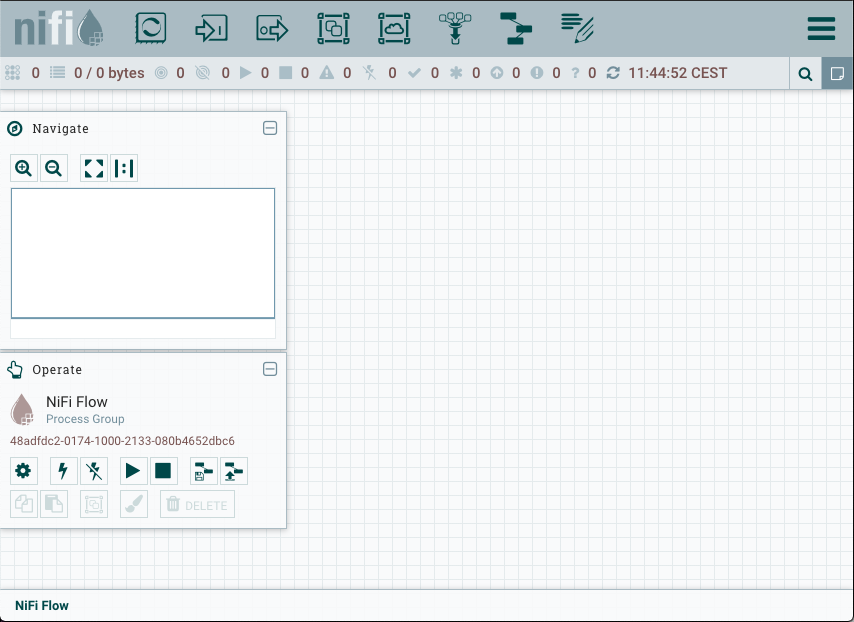
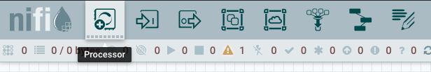
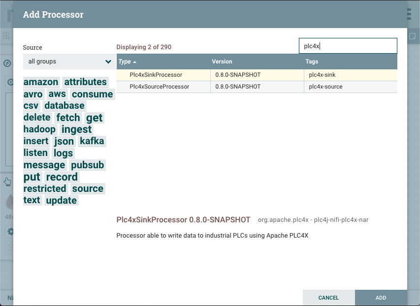
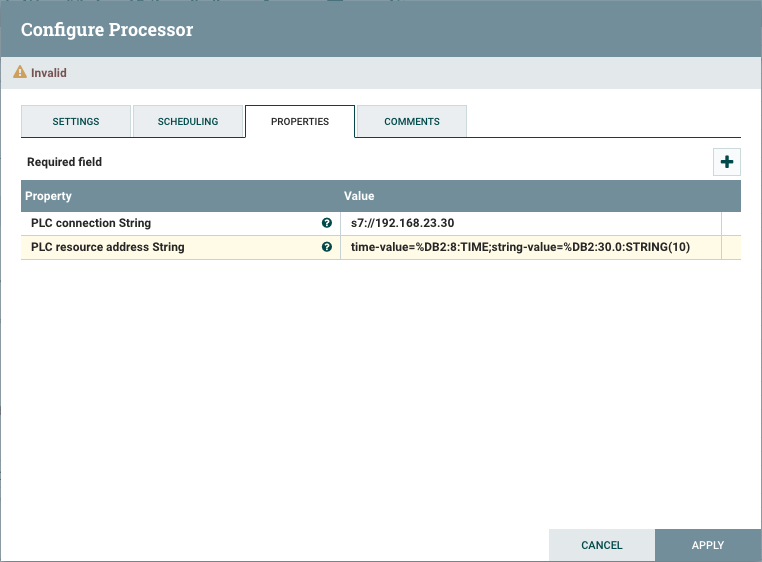
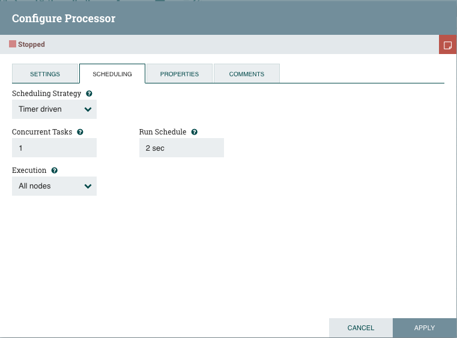
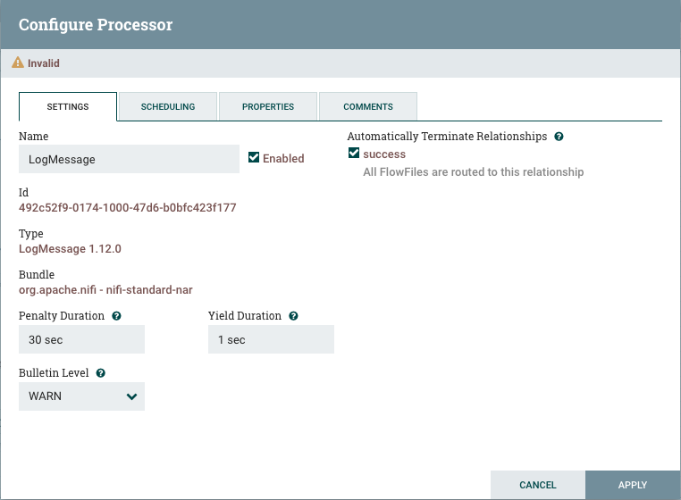
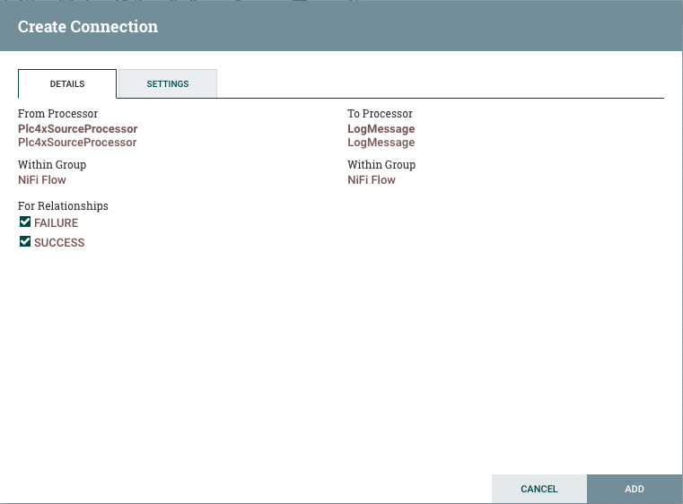
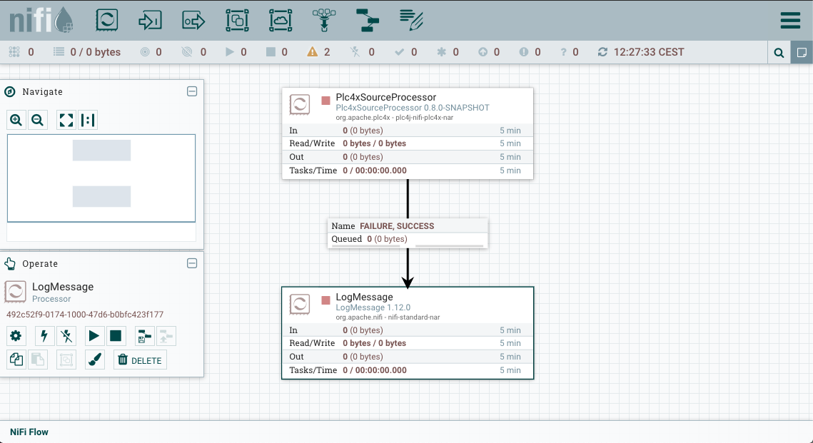
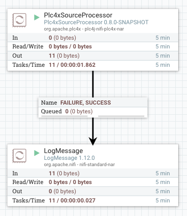

Apache NiFi
Apache NiFi allows creating systems that process data around the concept of data-streams.
Apache PLC4X provides both Source as well as Sink processors for accessing data in PLCs or writing data to them.
Setting Up NiFi
Even if the documentation of NiFi states it works with any Java version above 1.8, this is not quite true.
I have found that NiFi only works with Java versions below 11. With Java 1.8 you are definitely on the safe-side.
When starting with newer versions the start script just terminates after logging a statement that NiFi is now starting.
Other than that, I haven’t encountered any other requirements.
As soon as you have started NiFi using the nifi.sh run or run-nifi.bat the Web-UI of NiFi should be available at: http://localhost:8080/nifi/
|
It might take a few seconds for the Web-UI to show up … so if you’re getting errors in the browser, give it some time to start. |
Enabling PLC4X Processors in NiFi
In order to enable Apache PLC4X support in Apache NiFi all you need to do, is to copy our nar archive into the Nifi installations lib directory.
You can either build the nar by building PLC4X and using the version in the plc4j/integrations/apache-nifi/nifi-plc4x-nar/target directory.
Or you can download a released version from Maven central: https://search.maven.org/search?q=plc4j-nifi-plc4x-nar

Using a PLC4X Source Processor in NiFi
Add a PLC4X Source processor to the canvas, click on the Add processor button and drag it into the canvas.

A popup will appear in which you are presented the list of all available processors.
Enter PLC4X in the search field and select the Plc4xSourceProcessor and click Add (I think you can also double-click on the processor)

|
If you click on a Processor, it’s a little hard to see it’s selected as the selection is not highlighted. However, you can see a processor is selected as the bottom part shows the name of the selected processor. |
As soon as your new processor is added to the canvas you need to configure it. Do this by double clicking on it (Or by right-clicking and selecting Configure)
Here you now need to provide a PLC4X connection string and a PLC resource address String.
The PLC connection String is just a normal PLC4X connection string. Please consult the documentation on using the different types of supported connections Here
The PLC resource address String is a ;-separarated list of name-value-pairs, where each name is assigned a plc4x addrress.
|
For information on how an address string looks for the type of driver you are using, please check the documentation for the driver you are using Here |
Example:
PLC connection String: s7://192.168.23.30 PLC resource address String: time-value=%DB2:8:TIME;string-value=%DB2:30.0:STRING(10)

Before you save the processor there is one further setting that needs to be set.
For this please change to the Scheduling tab and set the Run Schedule to let’s say 1 or 2 seconds.

If we don’t do this, NiFi will hammer the PLC with requests and in case of my S7 it will simply start denying accepting new connections.
It will still say Invalid at the top, but this has nothing to do with your entries, it’s much more that this processor produces two data-streams: SUCCESS and FAILURE.
These need to be connected next.
After that’s done, click on Apply.
But before we can do that, we need to add something we can connect them to.
So we simply add another processor to the canvas: Using a LogMessage processor.
This simply logs every bit of data to the NiFi log-system.
As the LogMessage processor creates a stream of events every time a log message is logged, we need to configure it to auto-terminate that relationship.
Do this by double-clicking on the processor and selecting the Settings tab.
Here check the checkbox labeled SUCCESS in the section Automatically Terminate Relationships and then click Apply.

Now we can connect both processors.
Notice the arrow-icon as soon as the mouse is over the Plc4xSourceProcessor?
Click on this and start dragging. You notice that you now have a connection which you simply drag onto the log processor.
As soon as you release the connection there, the two processors are now connected.
As soon as you release the mouse, a popup will pop up and allow you to configure the connection. You can generally select which streams you want to connect.
In this case we’ll simply connect the SUCCESS and the FAILURE stream to the log processor.

As soon as that’s done, you are finished configuring your flow.

Last thing we now need to do, is to start the processors. Currently, they are stopped (You can see it with the red square icon)
Do this by right-clicking on both processors and selecting Start.
Now you should see an increasing number at the Out of the PLC4X Source and on the In of the Logging Processor.

Enabling debugging
In order to be able to debug the PLC4X, please edit the bin/nifi.sh (On Mac & Linux) and comment in the line:
BOOTSTRAP_DEBUG_PARAMS="-agentlib:jdwp=transport=dt_socket,server=y,suspend=n,address=8000"
For Windows, you would need to manually add:
-agentlib:jdwp=transport=dt_socket,server=y,suspend=n,address=8000
to the run-nifi.bat files JAVA_ARGS.
|
If you want NiFi so suspend at the start, so you can be sure to captue the entire execution, just change |